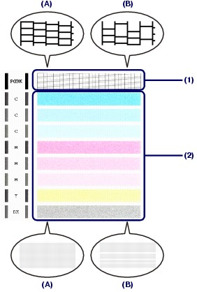
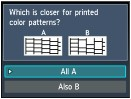
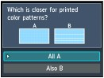

Examining the Nozzle Check Pattern
Examining the Nozzle Check PatternExamine the nozzle check pattern, and clean the Print Head if necessary.
Check if there are missing lines in the pattern (1) or horizontal white streaks in the pattern (2).

(A) No missing lines/No horizontal white streaks
(B) Lines are missing/Horizontal white streaks are present
Select the pattern that is closer to the printed nozzle check pattern on the confirmation screen.
 
For (A) (no missing lines or no horizontal white streaks) in both (1) and (2):
(1) The cleaning is not required. Select All A and press the OK button.
(2) Confirm the message and press the OK button.
The screen will return to the Maintenance screen.
 Note Note
|
For (B) (lines are missing or horizontal white streaks are present) in (1) or (2), or in both (1) and (2):
(1) The cleaning is required. Select Also B and press the OK button.
The cleaning confirmation screen will appear.
(2) Select Yes and press the OK button.
The machine starts cleaning the Print Head.